Code
library(tidyverse)
library(cluster)
library(NbClust)---
Customer segmentation is an important analytical approach used by financial institutions to better understand customer behavior and improve decision-making processes. By dividing customers into distinct groups based on shared characteristics, companies can develop more personalized services, optimize marketing strategies, and improve customer satisfaction.
In the rapidly growing fintech industry, understanding customer financial activity and digital behavior has become increasingly important. Modern banking institutions collect large amounts of demographic, financial, and behavioral data that can be analyzed to identify meaningful customer patterns.
The purpose of this project is to apply clustering techniques to the WalletUpCRM dataset in order to identify well-defined customer segments. The analysis focuses on variables related to income, spending behavior, investment activity, online banking usage, and digital engagement.
Exploratory Data Analysis (EDA), feature scaling, and K-Means clustering methods are used throughout the project. Different clustering configurations are evaluated using the Elbow Method and Silhouette Analysis to determine the optimal number of customer groups.
The final results aim to provide business insights that may support WalletUp in developing targeted marketing campaigns and promoting its new digital fintech services to the most suitable customer segments.
library(tidyverse)
library(cluster)
library(NbClust)library(factoextra)data <- read.csv("WalletUpCRM.csv")---
The data exploration stage was performed to better understand the structure, quality, and characteristics of the WalletUpCRM dataset before applying clustering techniques.
During this phase, the dataset was inspected using summary statistics, dimensional analysis, and visualization methods. The analysis included checking the number of observations and variables, reviewing data types, identifying missing values, and examining feature distributions.
Several visualizations such as histograms, density plots, and feature distribution graphs were used to analyze customer demographic, financial, and digital behavior patterns. Variables including income, credit card spending, mortgage volume, online banking activity, investment behavior, and application usage were explored in detail.
The exploratory analysis revealed noticeable differences in customer financial activity and digital engagement, indicating the presence of potentially distinct customer groups suitable for clustering analysis.
In addition, feature scaling and preprocessing techniques were applied to ensure that all variables contributed equally during the clustering process and to improve the overall model performance.
sample_n(data, 5) Age Income HouseholdSize CityAreaSize MeanCityIncome MeanCityHousePrize
1 57 180645 3 119817 140717 617080
2 22 37731 3 691482 249891 1849898
3 22 45688 3 64553 138277 210221
4 30 144970 3 206735 62033 596384
5 27 38708 1 693691 256996 1849955
MeanCityHouseHoldSize MeanCitySqFtPrice NumberCars InternetTrafficVolume
1 2 6767 4 15
2 2 8368 1 87
3 2 2168 1 46
4 3 5051 3 54
5 2 8526 1 85
MortageVolume AccountSpending CreditCardSpending HelpHotlineTime
1 149047 3533.0511 1879.5228 40.854350
2 14990 540.5640 644.5673 5.140105
3 246311 592.0604 1386.2881 15.223827
4 398115 1650.1454 794.1491 3.995899
5 14996 518.9586 677.1187 3.347741
CustomerSince GrocerySpending StockVolume CreditVolume NASDAQInvest
1 65 1212.6691 2456.1219 143.0195 3056.0639
2 3 268.2478 752.6952 2475.7996 387.0460
3 1 350.9096 1259.6187 136.9016 375.3839
4 11 586.7712 2488.5716 356.4346 1632.5866
5 4 271.7352 694.2086 2537.9778 409.2092
USAXSFundInvest BranchVisits AppLogins ATMVisits TimeOnlineBanking
1 112.6452 17 7 4 29.26688
2 144.2586 3 62 4 83.75821
3 1496.7892 3 34 2 125.29404
4 294.9048 8 84 2 148.62395
5 147.8492 3 62 9 87.01704
ServiceFees SocialMediaInter Bitcoins NFTs
1 40.05262 3 0.0001 1
2 24.74652 17 0.1002 3
3 14.76359 5 0.0005 1
4 15.91286 7 0.3998 3
5 25.47606 16 0.0992 2cat("Total number of data count:", nrow(data))Total number of data count: 10750cat("Shape of data:", dim(data))Shape of data: 10750 28str(data)'data.frame': 10750 obs. of 28 variables:
$ Age : int 40 37 71 53 40 32 72 29 55 38 ...
$ Income : int 79623 71616 78524 69938 74244 75738 74816 72334 77992 73186 ...
$ HouseholdSize : int 2 5 1 3 1 7 5 3 2 3 ...
$ CityAreaSize : int 454686 452465 456594 456594 452004 456143 463071 456844 455962 456032 ...
$ MeanCityIncome : int 90668 156742 52484 118422 36227 91296 106445 43453 156272 46232 ...
$ MeanCityHousePrize : int 1849978 1849599 1849953 1849302 1849247 1849755 1849963 1849975 1849634 1849832 ...
$ MeanCityHouseHoldSize: int 3 5 3 4 6 3 2 6 3 2 ...
$ MeanCitySqFtPrice : int 3813 5264 3405 2141 2160 4686 4012 3897 2433 3410 ...
$ NumberCars : int 2 2 1 0 1 1 2 3 3 0 ...
$ InternetTrafficVolume: int 58 36 57 71 39 52 62 41 65 67 ...
$ MortageVolume : int 430299 378228 282232 394235 350471 331681 350163 436763 216903 250300 ...
$ AccountSpending : num 938 1128 931 1002 1171 ...
$ CreditCardSpending : num 1418 694 1281 1135 1109 ...
$ HelpHotlineTime : num 3.22 3.44 2.47 5.9 5.1 ...
$ CustomerSince : int 36 36 36 36 37 36 37 36 36 36 ...
$ GrocerySpending : num 433 594 574 561 309 ...
$ StockVolume : num 1118 1392 1117 1354 1037 ...
$ CreditVolume : num 809 803 791 780 804 ...
$ NASDAQInvest : num 1488 1504 1500 1496 1500 ...
$ USAXSFundInvest : num 476 490 465 488 450 ...
$ BranchVisits : int 3 4 3 4 3 4 3 3 4 4 ...
$ AppLogins : int 10 19 14 14 16 13 11 16 20 8 ...
$ ATMVisits : int 9 8 8 8 9 8 9 7 8 7 ...
$ TimeOnlineBanking : num 71.5 67.1 58.9 61 67.2 ...
$ ServiceFees : num 41.8 52.2 54.6 41.8 57.1 ...
$ SocialMediaInter : int 27 25 28 34 34 24 21 32 28 24 ...
$ Bitcoins : num 0.0032 0.0037 0.0136 0.0016 0.0075 0.003 0.0076 0.0055 0.0036 0.0026 ...
$ NFTs : int 2 1 1 1 0 3 2 4 3 1 ...sapply(data, n_distinct) Age Income HouseholdSize
57 8669 8
CityAreaSize MeanCityIncome MeanCityHousePrize
8863 8488 7012
MeanCityHouseHoldSize MeanCitySqFtPrice NumberCars
8 4561 5
InternetTrafficVolume MortageVolume AccountSpending
108 7875 10750
CreditCardSpending HelpHotlineTime CustomerSince
10750 10750 55
GrocerySpending StockVolume CreditVolume
10750 10750 10750
NASDAQInvest USAXSFundInvest BranchVisits
10750 10750 21
AppLogins ATMVisits TimeOnlineBanking
128 12 10750
ServiceFees SocialMediaInter Bitcoins
10750 61 668
NFTs
13 summary(data) Age Income HouseholdSize CityAreaSize
Min. :18.00 Min. : 35202 Min. :1.00 Min. : 61613
1st Qu.:23.00 1st Qu.: 42803 1st Qu.:2.00 1st Qu.:121704
Median :30.00 Median : 71268 Median :3.00 Median :450100
Mean :35.16 Mean : 84700 Mean :2.81 Mean :372196
3rd Qu.:45.00 3rd Qu.:125870 3rd Qu.:4.00 3rd Qu.:459418
Max. :74.00 Max. :181863 Max. :8.00 Max. :708729
MeanCityIncome MeanCityHousePrize MeanCityHouseHoldSize MeanCitySqFtPrice
Min. : 35372 Min. : 125011 Min. :1.000 Min. :1871
1st Qu.:116253 1st Qu.: 444817 1st Qu.:2.000 1st Qu.:2627
Median :140458 Median : 614601 Median :3.000 Median :5778
Mean :163706 Mean : 942505 Mean :3.023 Mean :5318
3rd Qu.:235000 3rd Qu.:1849915 3rd Qu.:4.000 3rd Qu.:6741
Max. :286996 Max. :1850000 Max. :8.000 Max. :9886
NumberCars InternetTrafficVolume MortageVolume AccountSpending
Min. :0.000 Min. : 6.00 Min. : 14898 Min. : 500.0
1st Qu.:1.000 1st Qu.: 45.00 1st Qu.:120462 1st Qu.: 560.1
Median :1.000 Median : 60.00 Median :232414 Median : 898.0
Mean :1.384 Mean : 67.57 Mean :202824 Mean :1275.7
3rd Qu.:2.000 3rd Qu.: 86.00 3rd Qu.:287298 3rd Qu.:1647.6
Max. :4.000 Max. :118.00 Max. :605846 Max. :4257.1
CreditCardSpending HelpHotlineTime CustomerSince GrocerySpending
Min. : 501.1 Min. : 0.00606 Min. : 0.00 Min. : 150.1
1st Qu.: 651.1 1st Qu.: 4.57751 1st Qu.: 3.00 1st Qu.: 293.4
Median : 785.7 Median : 8.77448 Median :11.00 Median : 426.5
Mean :1013.3 Mean :12.81641 Mean :19.25 Mean : 535.8
3rd Qu.:1451.4 3rd Qu.:16.59390 3rd Qu.:36.00 3rd Qu.: 627.9
Max. :2041.9 Max. :60.75499 Max. :74.00 Max. :1253.5
StockVolume CreditVolume NASDAQInvest USAXSFundInvest
Min. : 388 Min. : 117.3 Min. : 228.4 Min. : 69.95
1st Qu.:1059 1st Qu.: 161.7 1st Qu.: 401.4 1st Qu.: 149.80
Median :1537 Median : 802.7 Median :1498.1 Median : 313.82
Mean :2142 Mean :1330.1 Mean :1828.5 Mean : 761.64
3rd Qu.:2505 3rd Qu.:2488.0 3rd Qu.:3056.1 3rd Qu.:1060.23
Max. :5738 Max. :3532.3 Max. :4532.4 Max. :3396.61
BranchVisits AppLogins ATMVisits TimeOnlineBanking
Min. : 0.000 Min. : 1.0 Min. : 0.000 Min. : 22.77
1st Qu.: 2.000 1st Qu.: 18.0 1st Qu.: 3.000 1st Qu.: 69.28
Median : 3.000 Median : 64.0 Median : 5.000 Median : 88.26
Mean : 3.913 Mean : 55.7 Mean : 4.928 Mean :113.88
3rd Qu.: 5.000 3rd Qu.: 82.0 3rd Qu.: 7.000 3rd Qu.:152.92
Max. :20.000 Max. :130.0 Max. :11.000 Max. :232.21
ServiceFees SocialMediaInter Bitcoins NFTs
Min. : 0.1343 Min. : 0.00 Min. :0.0000 Min. : 0.000
1st Qu.: 17.8442 1st Qu.: 5.00 1st Qu.:0.0005 1st Qu.: 1.000
Median : 27.2386 Median :16.00 Median :0.0998 Median : 3.000
Mean : 40.9382 Mean :19.03 Mean :0.1937 Mean : 3.317
3rd Qu.: 50.1652 3rd Qu.:31.00 3rd Qu.:0.4005 3rd Qu.: 4.000
Max. :124.2613 Max. :60.00 Max. :0.6014 Max. :12.000 The summary statistics provide an overview of the customer dataset and reveal significant variation in demographic, financial, and digital banking behavior variables.
The dataset contains customers with ages ranging from 18 to 74 years, while household sizes vary between 1 and 8 members. Income levels show substantial diversity, indicating the presence of both lower-income and high-income customer groups.
Financial variables such as mortgage volume, credit card spending, stock investments, and online banking activity also demonstrate wide distributions, suggesting different levels of financial engagement and investment behavior among customers.
Additionally, digital activity indicators including app logins, internet traffic volume, and time spent in online banking reveal varying levels of fintech adoption and online service usage.
Overall, the summary statistics confirm that the dataset contains heterogeneous customer profiles, making it suitable for customer segmentation and clustering analysis.
colSums(is.na(data)) Age Income HouseholdSize
0 0 0
CityAreaSize MeanCityIncome MeanCityHousePrize
0 0 0
MeanCityHouseHoldSize MeanCitySqFtPrice NumberCars
0 0 0
InternetTrafficVolume MortageVolume AccountSpending
0 0 0
CreditCardSpending HelpHotlineTime CustomerSince
0 0 0
GrocerySpending StockVolume CreditVolume
0 0 0
NASDAQInvest USAXSFundInvest BranchVisits
0 0 0
AppLogins ATMVisits TimeOnlineBanking
0 0 0
ServiceFees SocialMediaInter Bitcoins
0 0 0
NFTs
0 null_percentage <- colMeans(is.na(data)) * 100
print(null_percentage) Age Income HouseholdSize
0 0 0
CityAreaSize MeanCityIncome MeanCityHousePrize
0 0 0
MeanCityHouseHoldSize MeanCitySqFtPrice NumberCars
0 0 0
InternetTrafficVolume MortageVolume AccountSpending
0 0 0
CreditCardSpending HelpHotlineTime CustomerSince
0 0 0
GrocerySpending StockVolume CreditVolume
0 0 0
NASDAQInvest USAXSFundInvest BranchVisits
0 0 0
AppLogins ATMVisits TimeOnlineBanking
0 0 0
ServiceFees SocialMediaInter Bitcoins
0 0 0
NFTs
0 ---
data_clean <- na.omit(data)num_duplicated <- sum(duplicated(data_clean))
cat("Number of Duplicated Rows:", num_duplicated)Number of Duplicated Rows: 0num_rows <- nrow(data_clean)
num_columns <- ncol(data_clean)
cat("Shape of Cleaned Dataset:", num_rows, "rows and", num_columns, "columns")Shape of Cleaned Dataset: 10750 rows and 28 columnsdata <- data_cleancolnames(data) [1] "Age" "Income" "HouseholdSize"
[4] "CityAreaSize" "MeanCityIncome" "MeanCityHousePrize"
[7] "MeanCityHouseHoldSize" "MeanCitySqFtPrice" "NumberCars"
[10] "InternetTrafficVolume" "MortageVolume" "AccountSpending"
[13] "CreditCardSpending" "HelpHotlineTime" "CustomerSince"
[16] "GrocerySpending" "StockVolume" "CreditVolume"
[19] "NASDAQInvest" "USAXSFundInvest" "BranchVisits"
[22] "AppLogins" "ATMVisits" "TimeOnlineBanking"
[25] "ServiceFees" "SocialMediaInter" "Bitcoins"
[28] "NFTs" head(data, 3) Age Income HouseholdSize CityAreaSize MeanCityIncome MeanCityHousePrize
1 40 79623 2 454686 90668 1849978
2 37 71616 5 452465 156742 1849599
3 71 78524 1 456594 52484 1849953
MeanCityHouseHoldSize MeanCitySqFtPrice NumberCars InternetTrafficVolume
1 3 3813 2 58
2 5 5264 2 36
3 3 3405 1 57
MortageVolume AccountSpending CreditCardSpending HelpHotlineTime
1 430299 938.2333 1418.4175 3.215175
2 378228 1128.0831 693.5162 3.443510
3 282232 930.6301 1281.3682 2.470172
CustomerSince GrocerySpending StockVolume CreditVolume NASDAQInvest
1 36 433.1933 1118.460 809.0458 1487.870
2 36 594.0010 1391.721 802.6025 1504.137
3 36 573.8570 1117.443 790.6462 1500.006
USAXSFundInvest BranchVisits AppLogins ATMVisits TimeOnlineBanking
1 475.7493 3 10 9 71.54881
2 490.2583 4 19 8 67.13722
3 464.7735 3 14 8 58.90037
ServiceFees SocialMediaInter Bitcoins NFTs
1 41.83293 27 0.0032 2
2 52.16733 25 0.0037 1
3 54.63077 28 0.0136 1---
HouseholdCount <- table(data$HouseholdSize)
ggplot(data,
aes(y = factor(HouseholdSize))) +
geom_bar(fill = "steelblue") +
labs(
title = "Total Count per Household Size Category",
y = "Household Size",
x = "Total Count"
)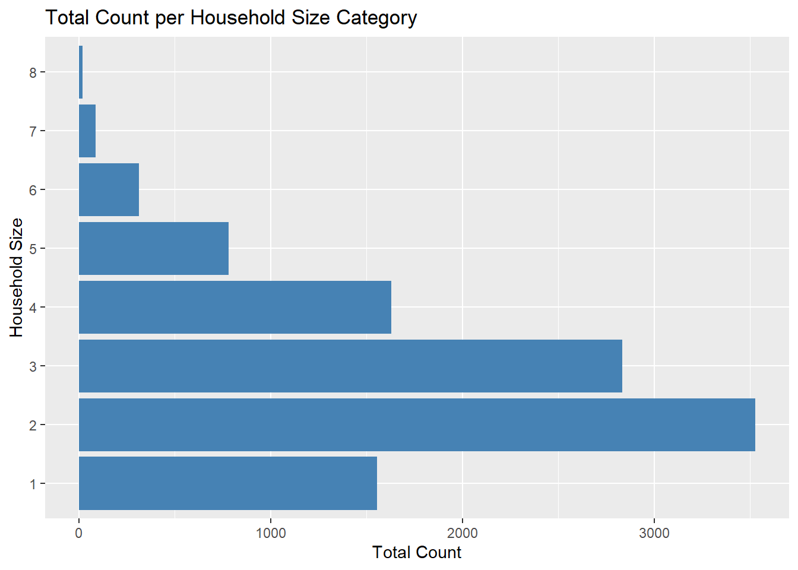
The visualization shows that most customers belong to households with 2 or 3 members, while larger households are significantly less common. This indicates that the customer base is primarily composed of small and medium-sized households, which may influence spending behavior and digital banking usage patterns.
selected_cols <- c(
"Age",
"Income",
"MortageVolume",
"CreditCardSpending",
"StockVolume",
"InternetTrafficVolume"
)
data_long <- data %>%
select(all_of(selected_cols)) %>%
pivot_longer(cols = everything(),
names_to = "Variable",
values_to = "Value")
ggplot(data_long,
aes(x = Value)) +
geom_density(fill = "steelblue",
alpha = 0.6) +
facet_wrap(~Variable,
scales = "free") +
theme_minimal() +
labs(
title = "Density Plots for Numerical Variables",
x = "Value",
y = "Density"
)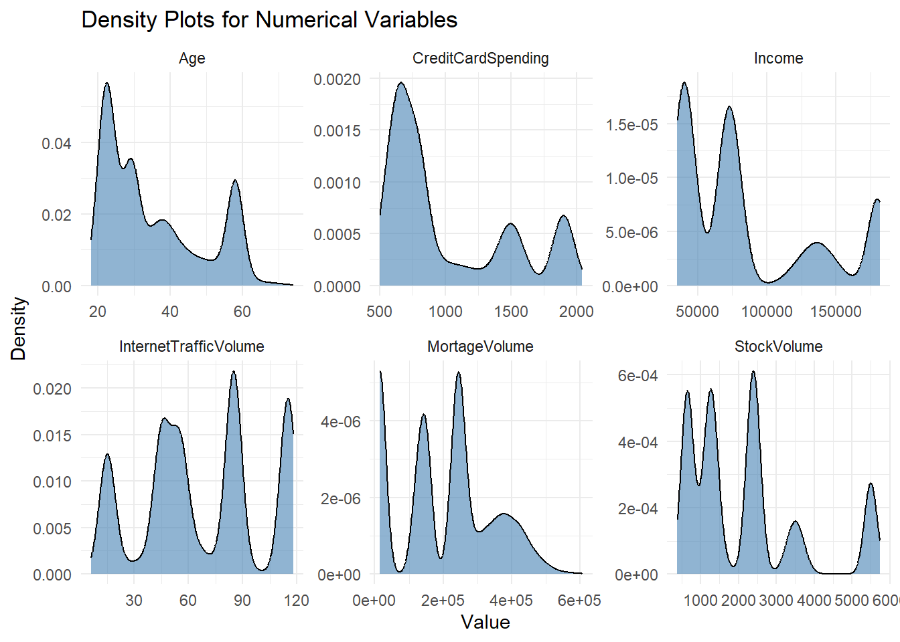
The density plots show that the selected numerical variables have diverse and non-uniform distributions. Variables such as income, mortgage volume, and stock investments display multiple peaks, indicating the existence of different customer groups with distinct financial behaviors. This supports the suitability of clustering techniques for customer segmentation.
avg_spending <- data %>%
group_by(HouseholdSize) %>%
summarise(
AvgSpending = mean(CreditCardSpending)
)
ggplot(avg_spending,
aes(x = factor(HouseholdSize),
y = AvgSpending)) +
geom_bar(stat = "identity",
fill = "brown",
alpha = 0.8,
color = "black") +
labs(
title = "Average Credit Card Spending by Household Size",
x = "Household Size",
y = "Average Credit Card Spending"
)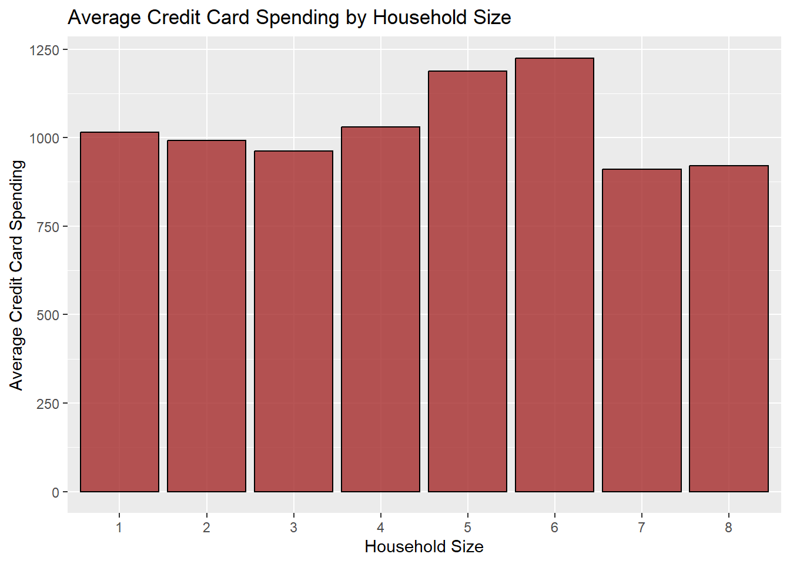
The chart indicates that larger households generally have higher average credit card spending. Customers from households with 5 and 6 members show the highest spending levels, while households with 7 and 8 members demonstrate lower average spending. This suggests that household size may influence customer purchasing behavior and financial activity.
---
The data preprocessing stage was performed to prepare the WalletUpCRM dataset for clustering analysis. During this step, missing values and duplicated records were checked, and the cleaned dataset was prepared for further analysis.
The selected numerical variables were then scaled to ensure that all features contributed equally to the clustering process. This step is important because K-Means clustering is sensitive to differences in variable scale, especially when features such as income, spending, and online activity have different value ranges.
names(data) [1] "Age" "Income" "HouseholdSize"
[4] "CityAreaSize" "MeanCityIncome" "MeanCityHousePrize"
[7] "MeanCityHouseHoldSize" "MeanCitySqFtPrice" "NumberCars"
[10] "InternetTrafficVolume" "MortageVolume" "AccountSpending"
[13] "CreditCardSpending" "HelpHotlineTime" "CustomerSince"
[16] "GrocerySpending" "StockVolume" "CreditVolume"
[19] "NASDAQInvest" "USAXSFundInvest" "BranchVisits"
[22] "AppLogins" "ATMVisits" "TimeOnlineBanking"
[25] "ServiceFees" "SocialMediaInter" "Bitcoins"
[28] "NFTs" selected_features <- data %>%
select(
Age,
Income,
HouseholdSize,
CreditCardSpending,
MortageVolume,
StockVolume,
InternetTrafficVolume,
AppLogins,
TimeOnlineBanking
)data_scaled <- scale(selected_features)glimpse(data)Rows: 10,750
Columns: 28
$ Age <int> 40, 37, 71, 53, 40, 32, 72, 29, 55, 38, 37, 37, …
$ Income <int> 79623, 71616, 78524, 69938, 74244, 75738, 74816,…
$ HouseholdSize <int> 2, 5, 1, 3, 1, 7, 5, 3, 2, 3, 1, 5, 2, 3, 4, 4, …
$ CityAreaSize <int> 454686, 452465, 456594, 456594, 452004, 456143, …
$ MeanCityIncome <int> 90668, 156742, 52484, 118422, 36227, 91296, 1064…
$ MeanCityHousePrize <int> 1849978, 1849599, 1849953, 1849302, 1849247, 184…
$ MeanCityHouseHoldSize <int> 3, 5, 3, 4, 6, 3, 2, 6, 3, 2, 4, 4, 3, 4, 5, 5, …
$ MeanCitySqFtPrice <int> 3813, 5264, 3405, 2141, 2160, 4686, 4012, 3897, …
$ NumberCars <int> 2, 2, 1, 0, 1, 1, 2, 3, 3, 0, 1, 1, 2, 3, 1, 1, …
$ InternetTrafficVolume <int> 58, 36, 57, 71, 39, 52, 62, 41, 65, 67, 24, 64, …
$ MortageVolume <int> 430299, 378228, 282232, 394235, 350471, 331681, …
$ AccountSpending <dbl> 938.2333, 1128.0831, 930.6301, 1001.7091, 1170.8…
$ CreditCardSpending <dbl> 1418.4175, 693.5162, 1281.3682, 1134.8701, 1108.…
$ HelpHotlineTime <dbl> 3.215175, 3.443510, 2.470172, 5.904162, 5.100044…
$ CustomerSince <int> 36, 36, 36, 36, 37, 36, 37, 36, 36, 36, 37, 36, …
$ GrocerySpending <dbl> 433.1933, 594.0010, 573.8570, 560.8140, 309.0191…
$ StockVolume <dbl> 1118.460, 1391.721, 1117.443, 1354.413, 1037.333…
$ CreditVolume <dbl> 809.0458, 802.6025, 790.6462, 780.2905, 803.9947…
$ NASDAQInvest <dbl> 1487.870, 1504.137, 1500.006, 1496.449, 1500.097…
$ USAXSFundInvest <dbl> 475.7493, 490.2583, 464.7735, 488.0418, 450.3138…
$ BranchVisits <int> 3, 4, 3, 4, 3, 4, 3, 3, 4, 4, 3, 3, 3, 4, 2, 2, …
$ AppLogins <int> 10, 19, 14, 14, 16, 13, 11, 16, 20, 8, 17, 15, 1…
$ ATMVisits <int> 9, 8, 8, 8, 9, 8, 9, 7, 8, 7, 8, 8, 8, 8, 9, 8, …
$ TimeOnlineBanking <dbl> 71.54881, 67.13722, 58.90037, 60.96027, 67.15407…
$ ServiceFees <dbl> 41.83293, 52.16733, 54.63077, 41.80699, 57.13193…
$ SocialMediaInter <int> 27, 25, 28, 34, 34, 24, 21, 32, 28, 24, 18, 32, …
$ Bitcoins <dbl> 0.0032, 0.0037, 0.0136, 0.0016, 0.0075, 0.0030, …
$ NFTs <int> 2, 1, 1, 1, 0, 3, 2, 4, 3, 1, 1, 2, 1, 6, 3, 0, …head(data_scaled) Age Income HouseholdSize CreditCardSpending MortageVolume
1 0.3576515 -0.1028962 -0.6110203 0.8636732 1.6471061
2 0.1361200 -0.2651878 1.6529279 -0.6818782 1.2700695
3 2.6468104 -0.1251715 -1.3656697 0.5714726 0.5749801
4 1.3176214 -0.2991988 0.1436291 0.2591261 1.3859733
5 0.3576515 -0.2119217 -1.3656697 0.2034089 1.0690862
6 -0.2330992 -0.1816402 3.1622266 -0.1526760 0.9330313
StockVolume InternetTrafficVolume AppLogins TimeOnlineBanking
1 -0.6842514 -0.2889997 -1.319352 -0.7152344
2 -0.5016177 -0.9537126 -1.059550 -0.7897758
3 -0.6849314 -0.3192140 -1.203885 -0.9289516
4 -0.5265523 0.1037852 -1.203885 -0.8941460
5 -0.7384732 -0.8630700 -1.146151 -0.7894912
6 -0.3919688 -0.4702851 -1.232751 -0.9766564selected_df <- as.data.frame(selected_features)
selected_long <- selected_df %>%
pivot_longer(
cols = everything(),
names_to = "Variable",
values_to = "Value"
)
ggplot(selected_long,
aes(x = Value)) +
geom_histogram(
bins = 20,
fill = "steelblue",
color = "black"
) +
facet_wrap(~Variable,
scales = "free") +
theme_minimal() +
labs(
title = "Distribution of Selected Features",
x = "Value",
y = "Frequency"
)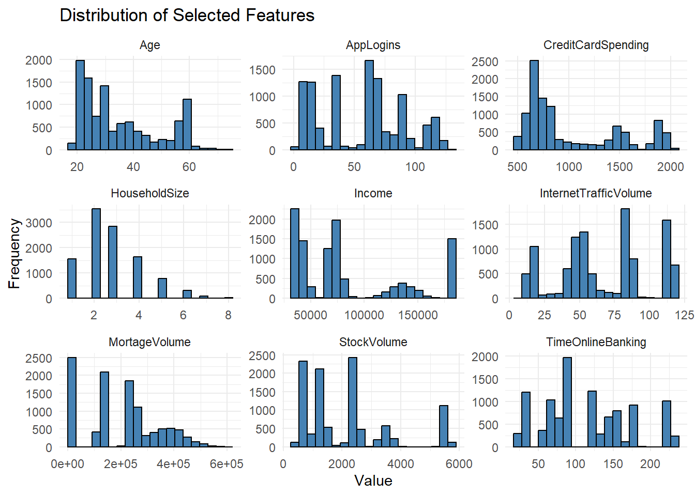
The histograms illustrate the distribution of the selected features used in the clustering analysis. Variables such as income, mortgage volume, credit card spending, and stock investments show substantial variability among customers, indicating different financial profiles and behavioral patterns.
In addition, digital activity variables such as app logins, internet traffic volume, and time spent in online banking reveal differences in customer engagement with digital banking services. These variations support the use of clustering techniques to identify meaningful customer segments.
wcss <- numeric()
for (k in 1:10) {
kmeans_model <- kmeans(
data_scaled,
centers = k,
nstart = 25
)
wcss[k] <- kmeans_model$tot.withinss
}
wcss [1] 96741.000 66254.603 44033.475 28637.779 21186.731 15360.497 12501.416
[8] 10903.684 9740.793 8856.984elbow_data <- data.frame(
k = 1:10,
wcss = wcss
)
ggplot(elbow_data, aes(x = k, y = wcss)) +
geom_line() +
geom_point() +
labs(
title = "Elbow Method for Optimal Number of Clusters",
x = "Number of Clusters (k)",
y = "Within-Cluster Sum of Squares"
)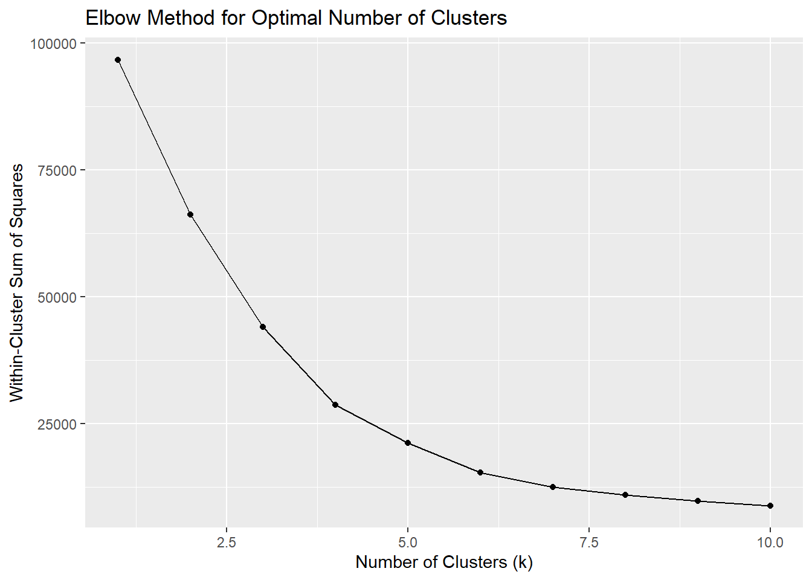
The Elbow Method was used to determine the optimal number of clusters for the K-Means model. The graph shows a significant decrease in within-cluster sum of squares between 1 and 4 clusters, after which the improvement becomes more gradual. This indicates that the optimal number of clusters is likely between 4 and 5, where the model achieves a good balance between cluster separation and model complexity.
fviz_nbclust(
data_scaled,
kmeans,
method = "wss"
)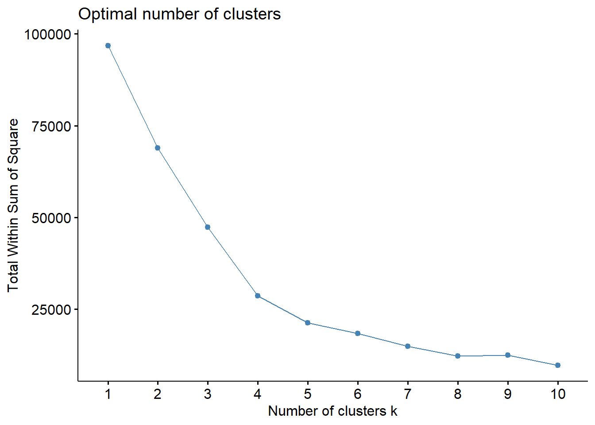
---
num_clusters <- 3
kmeans_model <- kmeans(
data_scaled,
centers = num_clusters,
nstart = 25
)
clusters <- as.factor(kmeans_model$cluster)
table(clusters)clusters
1 2 3
5417 3749 1584 cluster_df <- cbind(
as.data.frame(data_scaled),
Cluster = clusters
)
colSums(is.na(cluster_df)) Age Income HouseholdSize
0 0 0
CreditCardSpending MortageVolume StockVolume
0 0 0
InternetTrafficVolume AppLogins TimeOnlineBanking
0 0 0
Cluster
0 head(cluster_df, 3) Age Income HouseholdSize CreditCardSpending MortageVolume
1 0.3576515 -0.1028962 -0.6110203 0.8636732 1.6471061
2 0.1361200 -0.2651878 1.6529279 -0.6818782 1.2700695
3 2.6468104 -0.1251715 -1.3656697 0.5714726 0.5749801
StockVolume InternetTrafficVolume AppLogins TimeOnlineBanking Cluster
1 -0.6842514 -0.2889997 -1.319352 -0.7152344 1
2 -0.5016177 -0.9537126 -1.059550 -0.7897758 1
3 -0.6849314 -0.3192140 -1.203885 -0.9289516 3cluster_counts <- cluster_df %>%
count(Cluster)
ggplot(cluster_counts,
aes(x = factor(Cluster),
y = n,
fill = factor(Cluster))) +
geom_bar(stat = "identity") +
labs(
title = "Count of Clusters",
x = "Cluster",
y = "Count"
)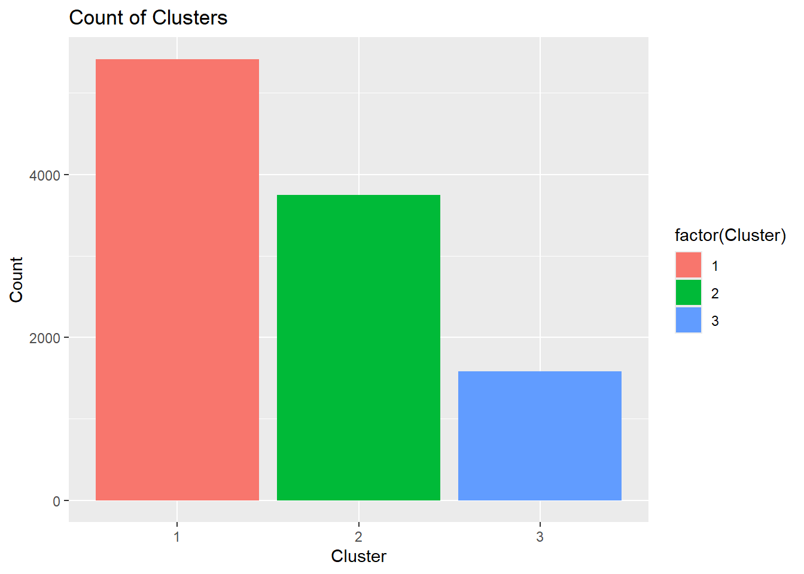
prop.table(table(cluster_df$Cluster)) * 100
1 2 3
50.39070 34.87442 14.73488 cluster_1_df <- cluster_df %>%
filter(Cluster == 1)
head(cluster_1_df) Age Income HouseholdSize CreditCardSpending MortageVolume
1 0.3576515 -0.1028962 -0.6110203 0.8636732 1.6471061
2 0.1361200 -0.2651878 1.6529279 -0.6818782 1.2700695
4 1.3176214 -0.2991988 0.1436291 0.2591261 1.3859733
5 0.3576515 -0.2119217 -1.3656697 0.2034089 1.0690862
6 -0.2330992 -0.1816402 3.1622266 -0.1526760 0.9330313
8 -0.4546307 -0.2506349 0.1436291 0.1094003 1.6939107
StockVolume InternetTrafficVolume AppLogins TimeOnlineBanking Cluster
1 -0.6842514 -0.2889997 -1.319352 -0.7152344 1
2 -0.5016177 -0.9537126 -1.059550 -0.7897758 1
4 -0.5265523 0.1037852 -1.203885 -0.8941460 1
5 -0.7384732 -0.8630700 -1.146151 -0.7894912 1
6 -0.3919688 -0.4702851 -1.232751 -0.9766564 1
8 -0.6929548 -0.8026415 -1.146151 -0.8510035 1cluster_2_df <- cluster_df %>%
filter(Cluster == 2)
head(cluster_2_df) Age Income HouseholdSize CreditCardSpending MortageVolume
1501 -0.9715376 -0.3718216 0.1436291 -0.5287431 -0.5840356
1502 2.4252789 -0.3537621 0.8982785 -0.5728960 -0.5509451
1503 1.6129967 -0.3308788 0.8982785 -0.5077859 -0.5519588
1504 1.0960898 -0.3345474 -0.6110203 -0.5701587 -0.6138098
1505 0.5053391 -0.3422900 0.1436291 -0.5726653 -0.5541021
1506 1.3914652 -0.3453101 -0.6110203 -0.5629593 -0.5195127
StockVolume InternetTrafficVolume AppLogins TimeOnlineBanking Cluster
1501 0.7436218 1.463425 0.9900057 0.9779445 2
1502 0.8348480 1.433211 1.0477397 1.0101470 2
1503 0.9200585 1.493639 1.0766067 1.0442159 2
1504 0.9145937 1.463425 1.0188727 1.0609451 2
1505 0.9041668 1.493639 0.9900057 0.9792228 2
1506 0.8566041 1.433211 1.0188727 1.0501052 2cluster_3_df <- cluster_df %>%
filter(Cluster == 3)
head(cluster_3_df) Age Income HouseholdSize CreditCardSpending MortageVolume
3 2.646810 -0.12517154 -1.3656697 0.57147258 0.57498013
7 2.720654 -0.20032795 1.6529279 -0.32796936 1.06685603
24 1.908372 0.07881285 0.1436291 0.56179551 0.09341516
43 2.056060 -0.15989185 0.8982785 0.03162398 0.48636702
56 1.686841 -0.12936716 0.8982785 0.24325640 0.99924852
69 1.612997 -0.05714972 3.9168760 0.17044905 1.40499491
StockVolume InternetTrafficVolume AppLogins TimeOnlineBanking Cluster
3 -0.6849314 -0.3192140 -1.2038845 -0.9289516 3
7 -0.6191160 -0.1681429 -1.2904854 -0.7565021 3
24 -0.3152507 -0.6817846 -0.9729487 -0.7084675 3
43 -0.7614411 -1.0141411 -1.1750175 -0.9430651 3
56 -0.4880414 -1.7694967 -1.4348203 -0.7297013 3
69 -0.5665313 -0.4098566 -1.3193524 -0.6926768 3cluster_long <- cluster_df %>%
pivot_longer(
cols = -Cluster,
names_to = "Feature",
values_to = "Value"
)
ggplot(cluster_long,
aes(x = Value, fill = factor(Cluster))) +
geom_histogram(
bins = 25,
alpha = 0.5,
position = "identity"
) +
facet_wrap(~Feature, scales = "free", ncol = 3) +
theme_minimal() +
labs(
title = "Feature Distribution Across Clusters",
x = "Scaled Value",
y = "Frequency",
fill = "Cluster"
)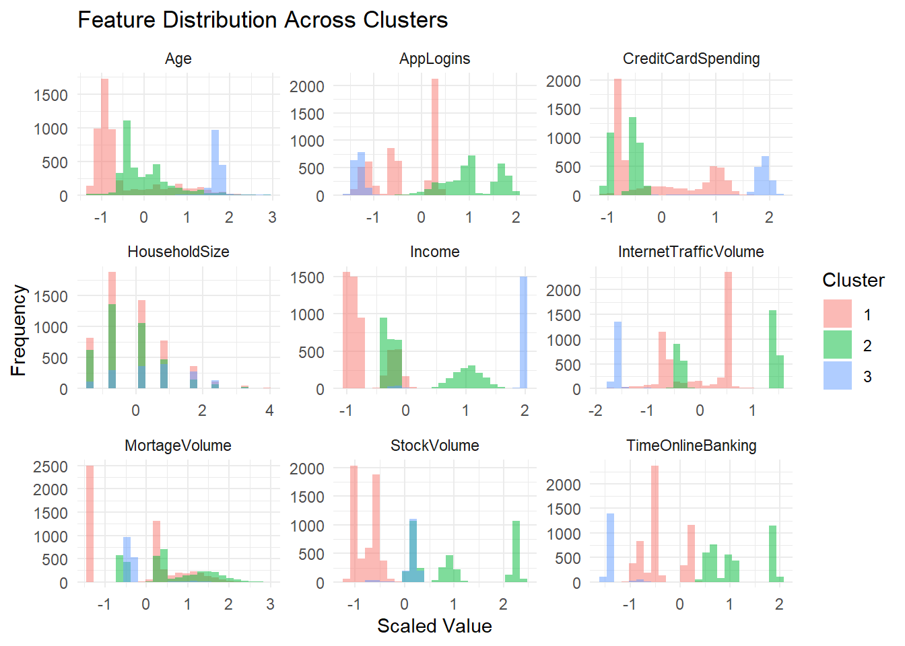
The feature distribution plots highlight clear differences between the identified customer clusters. Cluster 1 is characterized by lower income, lower investment activity, and moderate digital banking usage. Cluster 2 contains customers with higher financial activity, including larger mortgage volumes, stock investments, and higher online banking engagement. Cluster 3 represents customers with the highest income and credit card spending, but comparatively lower internet traffic and online banking activity.
These distinctions indicate that the clustering model successfully identified customer groups with different financial behaviors and levels of digital engagement, providing valuable insights for targeted marketing strategies.
---
Silhouette Analysis was performed to evaluate the quality of the clustering results and determine the most appropriate number of clusters. The silhouette score measures how similar each observation is to its assigned cluster compared to other clusters, with values closer to 1 indicating better cluster separation.
The results show that the silhouette score increases as the number of clusters grows, reaching its highest value at 7 clusters. This suggests that the clustering structure becomes more distinct and better separated with additional clusters. However, considering both interpretability and business applicability, a smaller number of clusters was selected to provide clearer and more meaningful customer segments for marketing analysis.
library(cluster)
silhouette_scores <- c()
for (k in 2:8) {
kmeans_model <- kmeans(
data_scaled,
centers = k,
nstart = 25
)
silhouette_avg <- mean(
silhouette(
kmeans_model$cluster,
dist(data_scaled)
)[, 3]
)
cat(
"For n_clusters =",
k,
"the average silhouette score is",
silhouette_avg,
"\n"
)
silhouette_scores <- c(
silhouette_scores,
silhouette_avg
)
}For n_clusters = 2 the average silhouette score is 0.3425706
For n_clusters = 3 the average silhouette score is 0.4072569
For n_clusters = 4 the average silhouette score is 0.4896753
For n_clusters = 5 the average silhouette score is 0.5414315
For n_clusters = 6 the average silhouette score is 0.5895381
For n_clusters = 7 the average silhouette score is 0.5983434
For n_clusters = 8 the average silhouette score is 0.5668543 The silhouette scores indicate that cluster quality improves as the number of clusters increases, reaching the highest value at 7 clusters (0.598). This suggests that the customer segments become more clearly separated with additional clusters.
silhouette_df <- data.frame(
k = 2:8,
score = silhouette_scores
)
ggplot(silhouette_df,
aes(x = k,
y = score)) +
geom_line() +
geom_point(size = 3) +
labs(
title = "Silhouette Scores for Different Numbers of Clusters",
x = "Number of Clusters",
y = "Average Silhouette Score"
)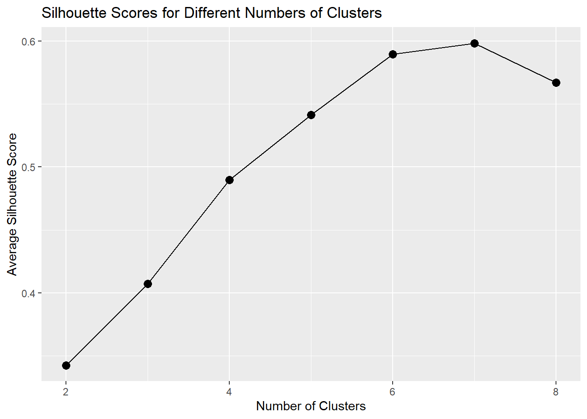
silhouette_scores[1] 0.3425706 0.4072569 0.4896753 0.5414315 0.5895381 0.5983434 0.5668543fviz_cluster(
kmeans_model,
data = data_scaled,
ellipse.type = "norm",
geom = "point",
palette = "jco"
)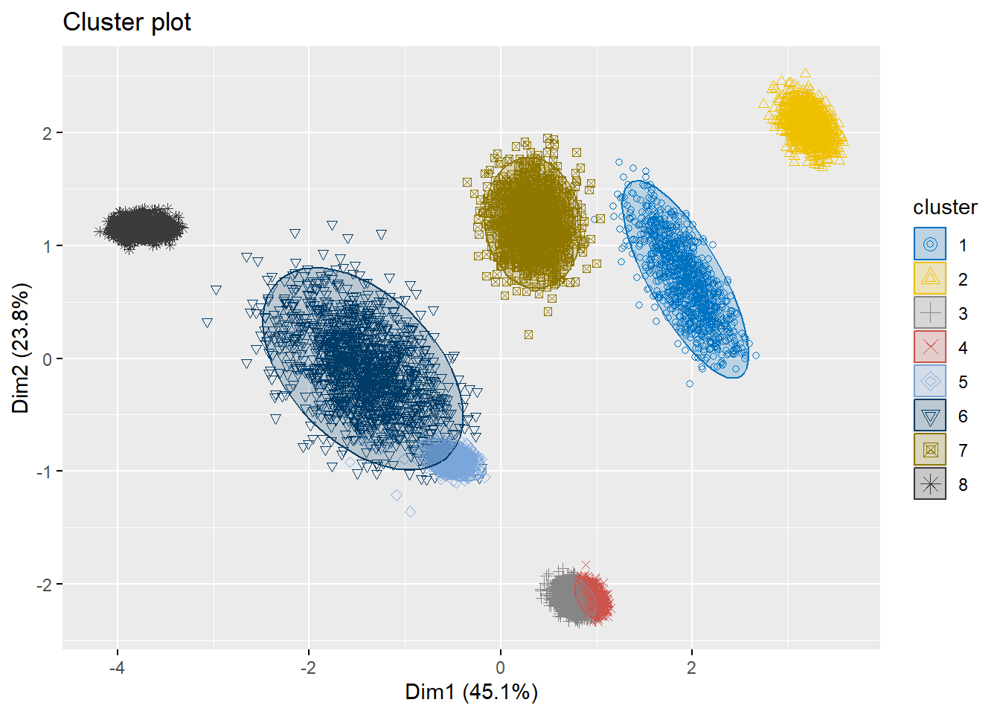
The cluster visualization demonstrates clear separation between the identified customer segments, indicating that the K-Means model successfully grouped customers with similar characteristics. Most clusters appear compact and well-defined, suggesting strong clustering performance and meaningful segmentation of customer financial and digital behavior patterns.
silhouette_df <- data.frame(
k = 2:8,
score = silhouette_scores
)
ggplot(silhouette_df,
aes(x = k,
y = score)) +
geom_line(color = "black") +
geom_point(size = 3,
color = "black") +
labs(
title = "Silhouette Score for K-Means Clustering",
x = "Number of Clusters (k)",
y = "Silhouette Score"
) +
theme_minimal()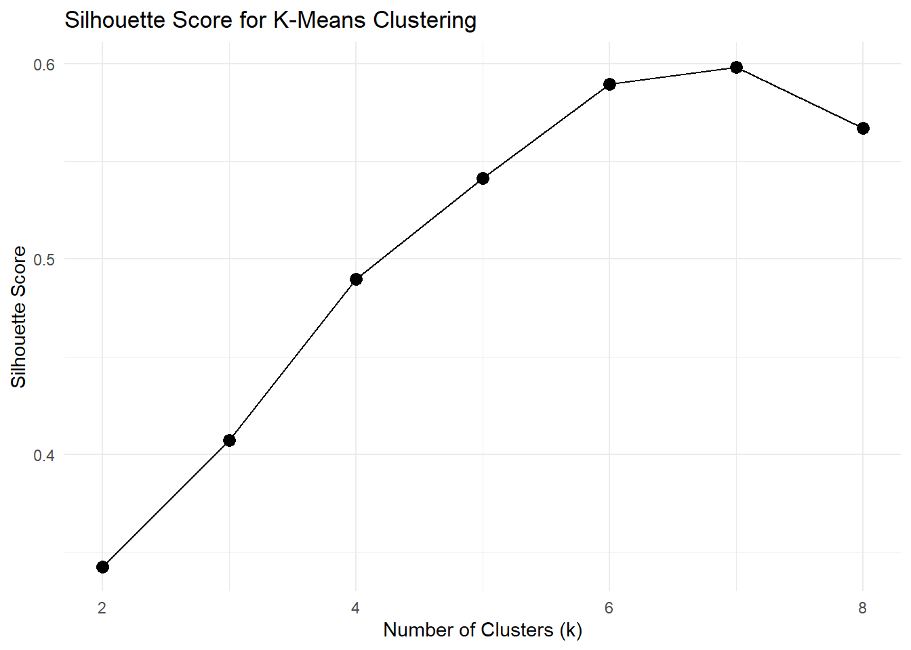
The silhouette analysis shows that clustering quality improves as the number of clusters increases from 2 to 7. The highest silhouette score is achieved at k = 7, indicating the best separation and cohesion between clusters. After 7 clusters, the score slightly decreases, suggesting that additional clusters do not improve the segmentation quality.
---
max_score <- max(silhouette_scores)
cat("Maximum Silhouette Score:", max_score)Maximum Silhouette Score: 0.5983434best_k <- 7
kmeans_final <- kmeans(
data_scaled,
centers = best_k,
nstart = 25
)
cluster_plot <- as.data.frame(data_scaled)
cluster_plot$Cluster <- as.factor(kmeans_final$cluster)
centers <- as.data.frame(kmeans_final$centers)
centers$Cluster <- as.factor(1:best_k)
ggplot(cluster_plot,
aes(x = Income,
y = CreditCardSpending,
color = Cluster)) +
geom_point(alpha = 0.7,
size = 2) +
geom_point(data = centers,
aes(x = Income,
y = CreditCardSpending),
color = "red",
size = 5,
shape = 4,
stroke = 2) +
theme_minimal() +
labs(
title = "K-Means Clustering with 7 Clusters",
x = "Scaled Income",
y = "Scaled Credit Card Spending",
color = "Cluster"
)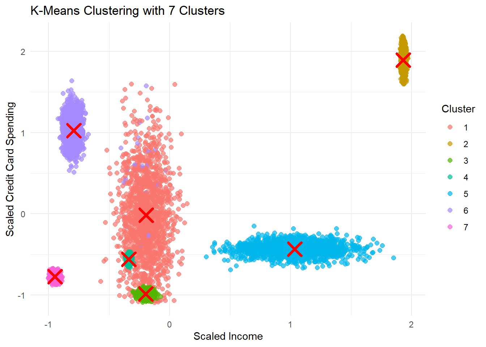
The K-Means clustering visualization with 7 clusters demonstrates a clear separation between customer groups based on scaled income and credit card spending. Several clusters are compact and well-defined, indicating strong similarities between customers within the same segment. The red “X” markers represent the cluster centroids, which summarize the typical behavior of customers in each group. The visualization confirms that the chosen clustering solution successfully identifies distinct customer profiles suitable for targeted marketing strategies.
distance_matrix <- dist(data_scaled)
hc_model <- hclust(distance_matrix,
method = "ward.D2")
plot(hc_model,
labels = FALSE,
main = "Hierarchical Clustering Dendrogram")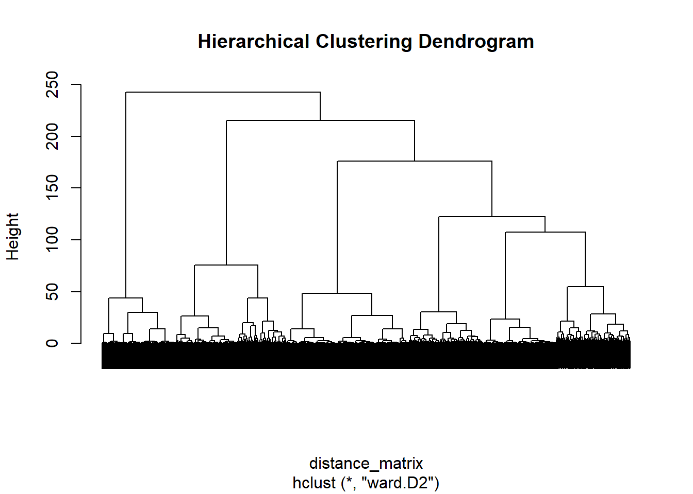
The hierarchical clustering dendrogram illustrates how customer observations are grouped based on similarity. Customers that merge at lower heights are more similar, while larger vertical distances indicate greater differences between groups. The dendrogram suggests the presence of several distinct clusters, supporting the results obtained from the K-Means analysis. This method provides an additional validation of the customer segmentation structure within the dataset.
cluster_summary <- aggregate(
. ~ Cluster,
data = cluster_df,
mean
)
cluster_summary Cluster Age Income HouseholdSize CreditCardSpending MortageVolume
1 1 -0.50560031 -0.7106822 -0.0555861 -0.08061307 -0.2762077
2 2 0.01545648 0.2576620 -0.1528763 -0.65203711 0.5290237
3 3 1.69248139 1.8205747 0.5519211 1.81891926 -0.3075080
StockVolume InternetTrafficVolume AppLogins TimeOnlineBanking
1 -0.7701424 -0.03804377 -0.3480962 -0.3881244
2 1.0592357 0.70863376 1.0570258 1.1463706
3 0.1267593 -1.54708641 -1.3113338 -1.3859051Customers in Cluster 1 are characterized by lower income, lower investment activity, and limited digital banking engagement.
Cluster 2 contains digitally active customers with moderate income and higher online banking activity.
Customers in Cluster 3 demonstrate higher income levels, stronger investment behavior, and increased credit card spending.
---
Based on the clustering results, Cluster 2 and Cluster 3 appear to be the most suitable targets for WalletUp’s new digital fintech services.
Cluster 2 customers are highly active in online banking and mobile applications, making them more likely to adopt digital financial products.
Cluster 3 customers demonstrate higher income levels and stronger financial activity, indicating greater potential for premium fintech services and investment-related products.
Therefore, the company should prioritize these customer segments in future digital marketing campaigns.
---
This project applied exploratory data analysis and K-Means clustering techniques to identify meaningful customer segments within the WalletUpCRM dataset.
The analysis included data preprocessing, missing value inspection, feature scaling, statistical exploration, and multiple visualizations in order to better understand customer financial and digital behavior.
Several clustering configurations were evaluated using the Elbow Method and Silhouette Analysis. The highest silhouette score was achieved at k = 7, indicating strong cluster separation and well-defined customer groups.
The clustering process revealed significant differences between customer segments in terms of income level, credit card spending, mortgage volume, investment activity, online banking usage, and mobile application engagement.
The identified customer groups can support more effective marketing strategies and personalized fintech services. Customers with high digital activity and stronger financial engagement appear to be the most promising targets for WalletUp’s future digital fintech campaigns.
Overall, the project demonstrates how clustering methods can help financial institutions better understand customer behavior, improve segmentation strategies, and support data-driven business decision-making.
---
Use customer segmentation results to identify high-value customer groups and personalize marketing campaigns based on spending behavior, online banking activity, and investment preferences.
Prioritize clusters with high app logins, internet traffic usage, and online banking activity, as these customers are more likely to adopt WalletUp’s fintech services.
Develop targeted promotions and financial offers for different customer segments to improve customer engagement and service adoption.
Customers with high stock and investment volumes represent a valuable segment for premium fintech products and advanced digital financial services.
Use behavioral insights from clustering to create loyalty programs and personalized financial recommendations that increase long-term customer retention.
Encourage less digitally active customer groups to adopt online banking services through educational campaigns and simplified mobile applications.
Continuously monitor customer behavior and update segmentation models regularly to adapt marketing strategies to changing customer needs.
---
During the development of this project, ChatGPT was used as a supportive tool for improving code structure, generating ideas for data visualization, and assisting with the interpretation of clustering results. All analytical decisions, data preprocessing, model selection, and final conclusions were reviewed and adapted independently as part of the learning process.